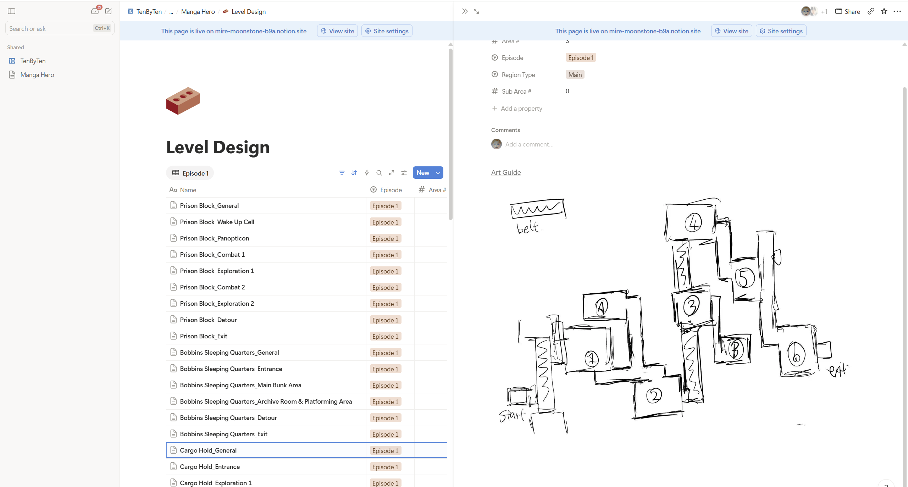
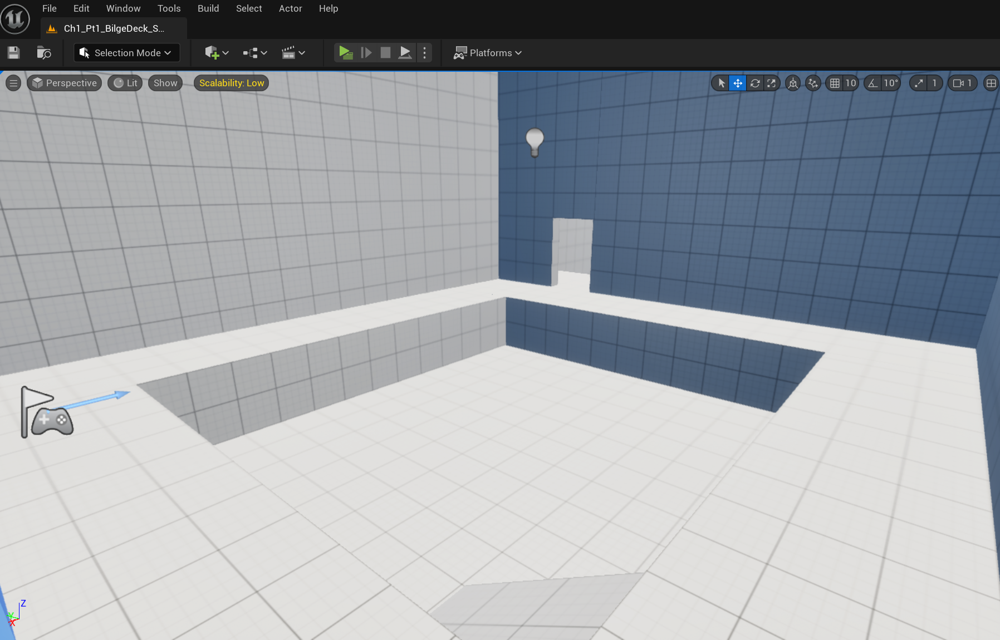
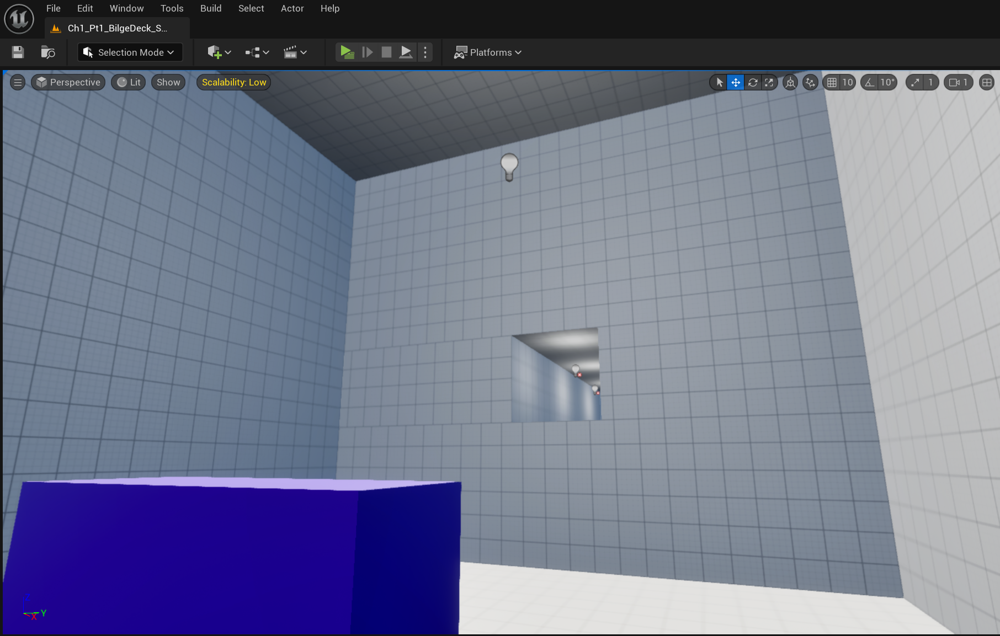
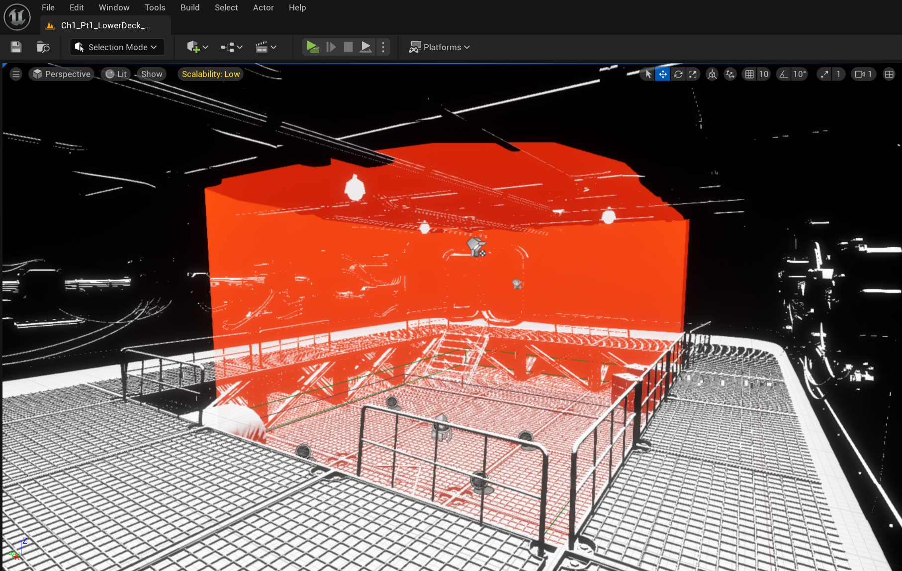
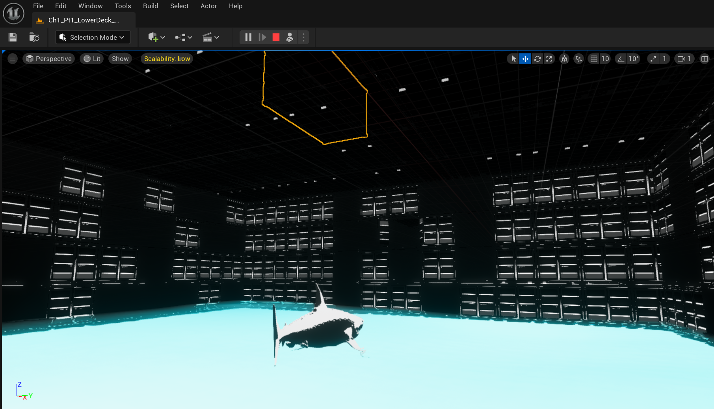
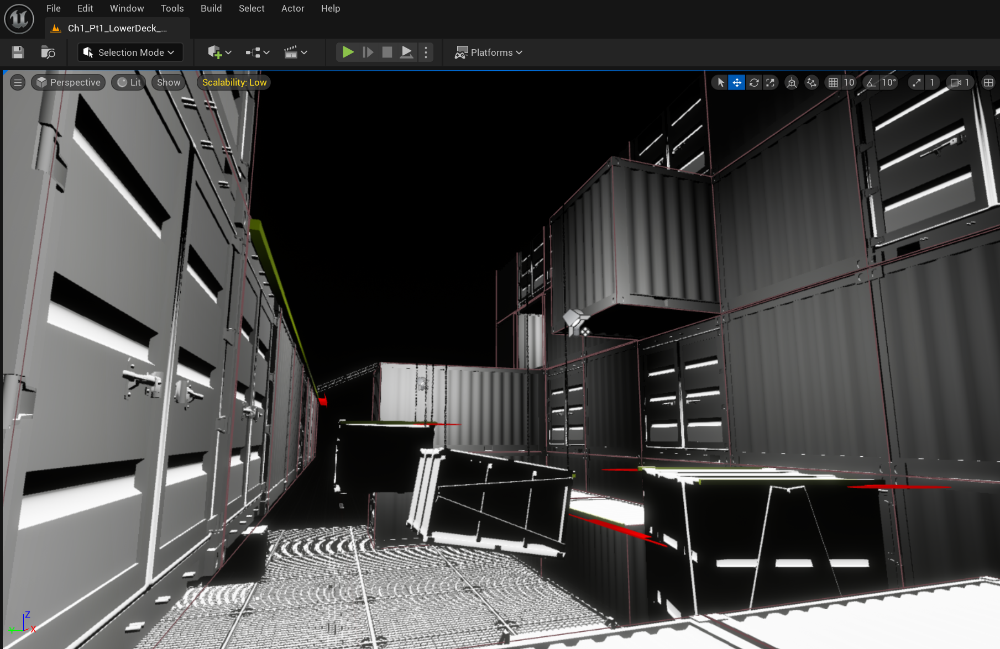
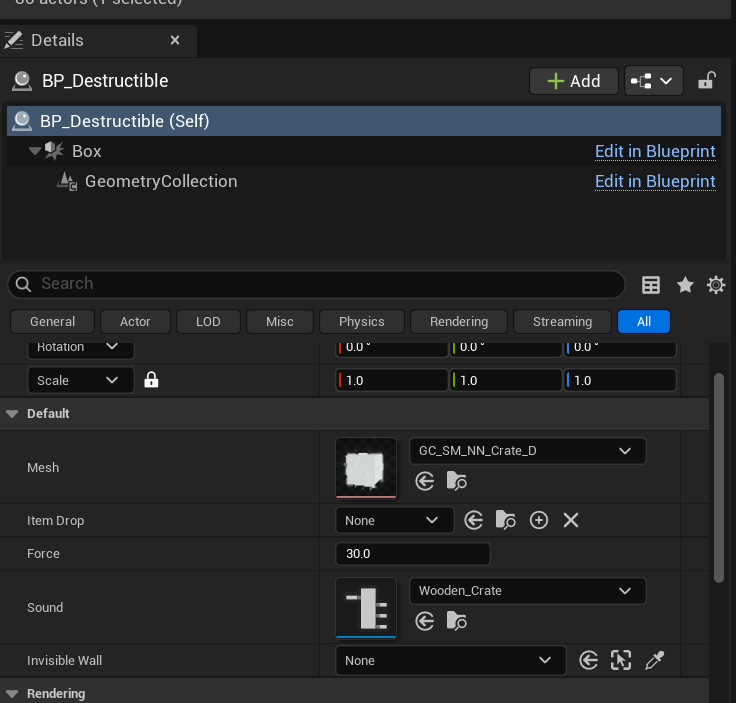
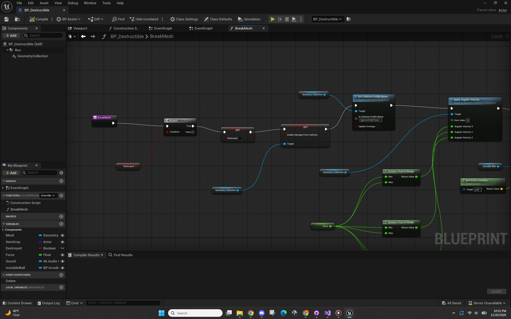

Manga Hero is a 3D action/hack-and-slash game developed by independent studio TenByTen Games using Unreal Engine 5.
The game focuses on fast-paced combat and exploration with distinctive shaders and visual effects that evoke the
iconic style of Japanese manga and anime. Manga Hero will be releasing in Early Access in Q4 2026,
featuring the first chapter of the game, "Attack of the Pirates". More chapters are planned to release
in the future.
The setting for Manga Hero Chapter 1 is the Black Moon, a magical pirate ship housing
unnaturaly vast facilities and strange catacombs. This location features 12 distinct
themed levels divided evenly between the three decks of the ship. As part of the
three-person Level Design team, I oversaw the development of these level environments
from initial concept through grayboxing, set dressing, and mechanics implementation.
I collaborated with gameplay and systems programmers to implement platforming challenges,
combat arenas, and story sequences while accounting for the player character's physics
and moveset. I also observed and recorded feedback from players during playtesting
sessions to improve level design flow and adjust the difficulty of platforming
and combat sections.
Level Design Example: Cargo Room
The cargo room was the first level design I completed for Manga Hero,
and serves as an introduction to platforming mechanics and more varied
combat encounters for players. Before implementing anything in-engine,
the Level Design team started by fully planning out the level progression
and theming, so we could have a clear idea of the story elements and
difficulty progression throughout the game. Next, we created hand-drawn
sketches of each level's layout, including indicators for points of interest
such as combat arenas and hidden rooms. Each level also had an art guide
created for it that described the level's aesthetic and types of assets
that should be used. These concept materials were posted on the
TenByTen Notion page so members could review eaach other's designs
and provide feedback.

Once the concept for the cargo room was approved, I could now start
building the level in-engine. For each level, I first create a simple
blockout using default geometry objects. This allows me to rapidly test
the level design and platforming layouts for functionality before
going through the lengthy process of placing assets. The blockout also
serves as a useful guideline for where to place assets during the
set dressing phase.


The 3D assets used for set dressing were selected primarily from a handful of
pre-purchased asset packs chosen to maximize reusability, such as general
pirate ship assets. While designing the visual style of the cargo room,
I took care to break up the wall and floor patterns whenever possible to
create a more visually distinct environment without interfering with gameplay.
The modular shipping container model made for a versatile asset as it could
be reused for platforms, walls, and tunnels to guide the player while capturing
the feeling of moving through a labyrinthine cargo hold.



When designing interactable objects for use in levels, we focused on mechanics
that could be reused across a variety of level themes to make more efficient
use of development time. I created a destructible object Blueprint class that
was originally intended to be used for wooden crates in the cargo room, but I
later modified it to support any type of destructible mesh for reusability.

The destructible object Blueprint went through several more iterations as I
uncovered bugs in the initial design. One issue I encountered was that after
a crate broke apart, the fractured pieces of the mesh still had collision,
which caused them to push the player around erratically. After experimenting
with various collision presets, I determined that the destruction event would
need to update the destructible object's collision to ignore pawn and camera
objects while still interacting with the environment. To achieve this, I
created a modified collision preset and dynamically set the collision
when the desctruction event was called in the Blueprint script.

I encountered another issue while testing the destructible crate's compatibility
with a conveyor belt object created by another level designer. The conveyor belt
script was designed to track each object that made contact with the belt and apply
a constant offset to those objects' positions based on the direction the belt was
facing. I planned to make use of this to have moving crates in the cargo room,
making the level feel alive and creating unique obstacles and platforming
challenges. However, I found that the conveyor belt failed to move the crates
around, despite working perfectly with other types of objects. To investigate
the source of the issue, I highlighted one of the crates while simulating the
level to observe any changes in its parameters. I noticed that the crate's
position was properly increasing over time, but only for the object root and
not the actual geometry mesh. For geometry collection objects in UE5, the
position value of the object is separate from the visual location of the
on-screen mesh, meaning the conveyor belt implementation would not work
with them. To fix this mismatch without breaking the working conveyor
belt implementation, I created a new "FakeDestructible" class to build
off of the existing Destructible class. The FakeDestructible uses a
static mesh instead of a destructible mesh as the base, but otherwise
has the same parameters as a Destructible. When the player attacks a
FakeDestructible object, the FakeDestructible spawns a base Destructible
object with matching parameters on its exact position, and then deletes
itself. This allows it to function indistinguishably from the regular
Destructuble object from the player's perspective, while leveraging
the more flexible properties of the static mesh class to achieve more
stable behavior. Making use of FakeDestructible fixed the compatibility
issue with the conveyor belt and gave me a stronger base to work off of
when adding future updates to the destructible object class.